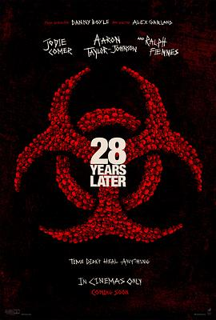

5.4
惊变28年
28 Years Later
2025
英国
评分 5.4
导演:
丹尼·博伊尔
演员:
朱迪·科默 / 阿尔菲·威廉姆斯 / 亚伦·泰勒-约翰逊 / 拉尔夫·费因斯 / 杰克·奥康奈尔 / 齐·刘易斯-帕里 / 艾德文·瑞丁
类型:
恐怖,惊悚,科幻
剧情简介
病毒爆发几近绝灭世界，28年后的英国，一座被海潮包围的小岛成为少数人类的避难之所。他们与世隔绝，自建起防线、形成独特文化。然而岛外的世界并未平静。一次父子跨越大堤的探险，揭开了“被治愈”与“被遗忘”之间模糊的界线。少年 Spike（阿尔菲·威廉姆斯 饰）怀着好奇心踏上大陆，对岸上残存的文明与病毒变种震撼不已；他的父亲 Jamie（阿伦·泰勒-约翰逊 饰）却深知归途不可回避。当荒废城镇的裂缝中孕育出比“狂怒病毒”更危险的存在，Spike与Jamie在废墟、沼泽、监控塔之间追寻真相：感染不再只是奔跑的怪物，而是城市记忆、集体逃避、恐惧的化身。岛上庆典、旧电视机带出的新闻片段、海雾中升起的焰火——导演用这些细节构建出一个“被遗忘但未被结束”的世界。影片运用冷峻且充满张力的画面语言：大堤外潮水击打堤岸，废墟里镜头长镜头拉出残骸与倒影；少年在古仓库里翻看父亲留下的笔记本，暴露的不只是病毒科学，更是人类的信念裂缝。导演丹尼·博伊尔将现代恐怖的社会寓言与末日生存结合起来，让观众在血肉横飞的追逐之外，感受到“被遗忘的隔离感”与“末世留下的文化断层”。当终幕时，镜头拉远，岛上的灯光一盏盏熄灭，海面上泛起水波——这并不是终结，而是另一个“28年”循环的起点。你已看见幸存者，也看见被遗忘者；你见证了病毒的胜利，也看见人性的残余。世界可能重生，但问号仍在夜色中回荡。